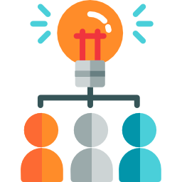

Понятие концепции
Техническая концепция сайта — это первый документ, который составляется непосредственно в самом начале проектирования сайта.
Часто работа над ней начинается еще до привлечения подрядчика и составляется рабочей группой заказчика. Четких требований к составлению технической концепции сайта нет: она является и результатом исследования, и стратегическим видением задач.
Структура концепциии
Задача: сформулировать для проектируемого сайта идеи, которые далее будут заложены в техническое задание:
Анализ целевой аудитории
Видимость сайта и анализ конкурентов
Семантическое ядро сайта
Концепция дизайна
Материалы для сайта
Анализ целевой аудитории
.png)
широкая целевая аудитория (потенциальные посетители)
целевая аудитория посетителей сайта (70-80% вероятность, что зайдут на сайт)
конкуренты
потенциальные партнеры
сотрудники компании
Анализируются по разным показателям: частота посещения пользователем, язык, географическая принадлежность и др.
Для выявления конкурентноспособности проводится анализ конкурентов по ключевым показателям: ТИЦ/PR, качество и объем ресурсов, ссылочная масса и т. п.
Семантическое ядро
.png)
Формирование потока посетителей начинается с работы над семантическим ядром сайта, которое состоит из комплекса поисковых запросов (ключевых слов).
Наполнение ядра зависит от тематики сайта, геозависимости запроса и др.
Семантическое ядро является основой структуры проектируемого ресурса
Концепция дизайна

Проектирование сайта связано с разработкой структуры и навигации будущего ресурса. Структура сайта, сформированная на основе ключевых запросов, представляет приблизительную схему сайта.
Далее подготавливаются структурные схемы (прототипы) для всех ключевых страниц, отличающихся по структуре
Дизайн разарабатывается с учетом существующего или перспективного имиджа компании, а также на основе подготовленных прототипов
Материалы для сайта
.png)
Тематика, стиль подачи и характер материалов для сайта зависят от целевого сегмента и аудитории
Основные блоки материалов:
контакт-листы
прайс-листы
графические, фото- и видеоматериалы
базы данных и мн. др.
В заключение
Концепция сайта призвана сформировать единое видение проекта у всех участников, как разработчика, так и заказчика.
Определение основных идей имеет исключительно прикладное значение для моделирования сайта:на основе этих идей проектируется функциональная и информационная структура, дизайн, контент и пр.